Laser Tracking
Using the Image Acquisition Toolbox, image data streams from a camera are acquired directly into MATLAB. These images are used to track objects in the camera's view. For this demonstration, the object being tracked is the dot produced by a laser pointer.
The monitor of a computer running MATLAB is placed in the camera's view while a laser pointer shines a red dot on a MATLAB figure window. The camera is used to acquire images of the MATLAB figure window while the laser pointer moves around. By tracking the movement of the laser dot, the laser pointer can be used as a pointer device similar to a mouse.
The first task involves calibrating the data to establish a relationship between the acquired image pixels and the MATLAB figure axes. Once this relationship is established, the laser dot can be tracked as it moves around within the MATLAB figure window.
This demonstration uses a set of utility functions that aid in the processing of images. These utility functions require the Image Processing Toolbox and can be found in the following directory:
Overview
Focus a camera onto the screen of a computer that MATLAB is running on.
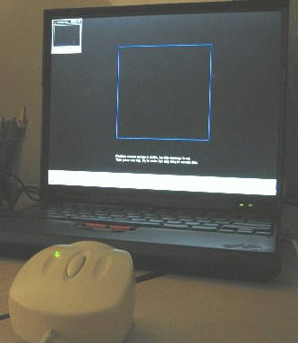It is best to have the ambient light in the room minimized. This demonstration has been successfully run in auditoriums using a projector.
An image acquisition device will be used to acquire image data to perform the calibration and laser tracking. The device used will be a generic Windows video WebCam.
% Add the directory containing the utility functions to the MATLAB path. utilpath = fullfile(matlabroot, 'toolbox', 'imaq', 'imaqdemos', ... 'html', 'applications', 'laserTracking'); addpath(utilpath); % Access and configure a device. vid = videoinput('winvideo', 1, 'RGB24_320x240'); set(vid, 'FramesPerTrigger', 1); set(vid, 'TriggerRepeat', Inf); triggerconfig(vid,'manual')
The calibration screen created is purposely set to black to get the best contrast for the laser pointer. Some systems work better when the window's colors are set dark for the title bars.
Since a red laser will be used, the red plane of the image is the only color plane of interest. The calibration square is made blue in order to make it appear "invisible" in the red plane.
% Create the laser figure window. laserFig = figure; hBox = plot([0 0 1 1 0], [0 1 1 0 0], 'b-'); hold on % Set up calibration screen. Modify the cursor so it does not % interfere with the calibration. hTarget = plot(0, 0, 'yo'); set(gca, 'Color', [0, 0, 0]); set(laserFig, 'Color', [0, 0, 0], 'Menubar', 'none', ... 'DoubleBuffer', 'on', 'Pointer', 'custom', ... 'PointerShapeCData', repmat(NaN, 16, 16));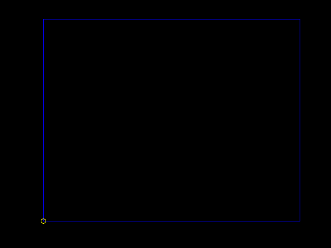
Position the camera such that only the blue square is visible.
% Display positioning information. posText = sprintf('%s\n%s', ... 'Position the camera and ensure the blue box', ... 'is the only thing in the camera''s view.'); infoText = text(0, -0.2, posText, 'Color', [1 1 1]); axis([-0.2 1.2 -0.2 1.2]) axis('equal')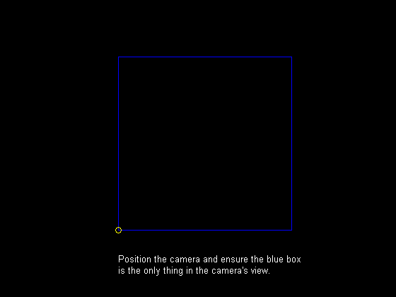
% Using the preview window, request that the camera be positioned such % that the view is of the blue box and little else. preview(vid) smallFigPos = get(laserFig, 'Position'); set(laserFig, 'Position', get(0, 'ScreenSize')); disp('Waiting for camera to be positioned...press any key to continue.') pause
Waiting for camera to be positioned...press any key to continue.
Now that the camera is focused on the right area, a target is drawn at each of the four corners of the box. The calibration is performed by aiming the laser on each corner of the blue square, allowing a relationship to be established between the camera pixel coordinates (the image) and MATLAB axis coordinates (the square). For each target displayed:
The laser position is determined by thresholding the red plane and looking for high intensity values. Some additional processing is performed to make sure the laser is not obscured by ghost images caused by poor optics in some WebCams. It is also verified that a laser dot was actually present on the screen.
% Provide calibration instructions. calibText = sprintf('%s\n%s', ... 'Aim the laser pointer on each target as it appears.', ... 'Hold the laser on the target until the target moves.'); set(infoText, 'string', calibText); 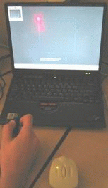 % Start the acquisition and create a new figure to display % calibration results in a MATLAB SPY plot. start(vid) spyFig = figure; % Target 1... figure(laserFig); set(hTarget, 'Xdata', 0, 'Ydata', 0); sound(1), pause(2) sound(1), trigger(vid); acqResults{1} = getdata(vid, 1); [xCalib(1), yCalib(1), laserSights] = util_findlaser(acqResults{1}); figure(spyFig); spy(laserSights) title('Target 1: Suspected Laser Sighting')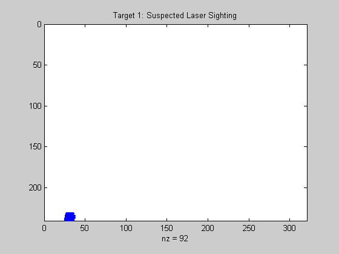
% Target 2... figure(laserFig); set(hTarget, 'Xdata', 0, 'Ydata', 1); sound(1), pause(2) sound(1), trigger(vid); acqResults{2} = getdata(vid, 1); [xCalib(2), yCalib(2), laserSights] = util_findlaser(acqResults{2}); figure(spyFig); spy(laserSights) title('Target 2: Suspected Laser Sighting')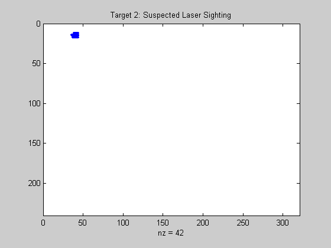
% Target 3... figure(laserFig); set(hTarget, 'Xdata', 1, 'Ydata', 1); sound(1), pause(2) sound(1), trigger(vid); acqResults{3} = getdata(vid, 1); [xCalib(3), yCalib(3), laserSights] = util_findlaser(acqResults{3}); figure(spyFig); spy(laserSights) title('Target 3: Suspected Laser Sighting')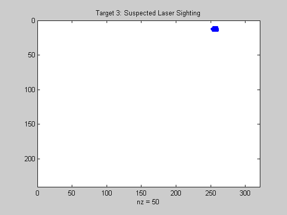
% Target 4... figure(laserFig); set(hTarget, 'Xdata', 1, 'Ydata', 0); sound(1), pause(2) sound(1), trigger(vid); acqResults{4} = getdata(vid, 1); [xCalib(4), yCalib(4), laserSights] = util_findlaser(acqResults{4}); figure(spyFig); spy(laserSights) title('Target 4: Suspected Laser Sighting')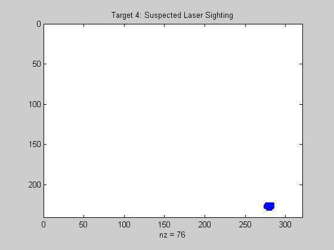
% Close the SPY plot and stop the acquisition.
close(spyFig)
stop(vid);Plot the acquired image and the calculated laser pointer coordinates for each target. Since the yellow crosshairs are positioned at the proper location in each image, the processing results are validated.
% Target 1 results...
calibFig = figure;
util_plotpos(acqResults{1}, xCalib(1), yCalib(1));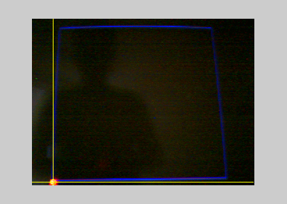% Target 2 results...
util_plotpos(acqResults{2}, xCalib(2), yCalib(2));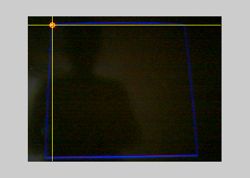% Target 3 results...
util_plotpos(acqResults{3}, xCalib(3), yCalib(3));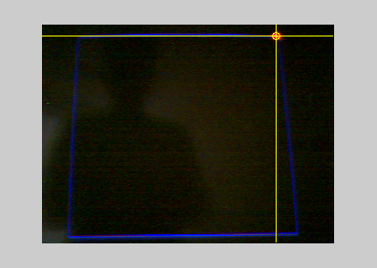% Target 4 results...
util_plotpos(acqResults{4}, xCalib(4), yCalib(4));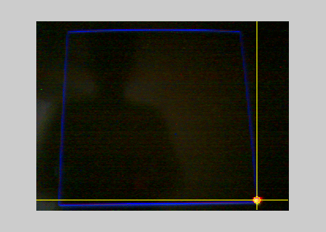% Close the figure illustrating calibration results.
close(calibFig)Start the acquisition and process the acquired data a set number of times. The processing consists of locating the laser in the acquired image and determining the laser positions in pixel and MATLAB axis coordinates.
In order to make things interesting, using the laser pointer, attempt to "draw" the letter 'M' (for MATLAB) within the blue box.
% Update instructions on laser screen. figure(laserFig); set(infoText, 'string', 'Move the laser pointer within the blue box.'); % Start the acquisition. For each iteration: % % * output a sound to indicate a frame is about to be acquired % * trigger the device % * process the acquired image and locate the laser % * convert pixel coordinates to MATLAB axis coordinates laser.x = []; laser.y = []; start(vid) for i = 1:100, % Acquire an image frame and determine the % camera pixel coordinates. sound(1), trigger(vid); frame = getdata(vid, 1); [x, y] = util_findlaser(frame); if ~isnan(x) && ~isnan(y), % If coordinates were valid, ensure the camera pixel coordinate % was in the calibration range. x = max([x min(xCalib([1 2]))]); x = min([x max(xCalib([3 4]))]); y = min([y max(yCalib([1 4]))]); y = max([y min(yCalib([2 3]))]); % Determine spatial transformation from the unit square calibration points. tform = cp2tform([xCalib(:) yCalib(:)], [0 0; 0 1; 1 1; 1 0], 'projective'); xyScreen = tformfwd([x, y], tform); xScreen = xyScreen(1); yScreen = xyScreen(2); % Ensure the new coordinates remain within the unit square. xScreen = min([xScreen 1]); xScreen = max([xScreen 0]); yScreen = min([yScreen 1]); yScreen = max([yScreen 0]); % Store the new MATLAB axis coordinates. laser.x = [laser.x(:); xScreen]; laser.y = [laser.y(:); yScreen]; end end % Plot the tracked laser positions. set(laserFig, 'Position', smallFigPos); plot(laser.x, laser.y, 'r*');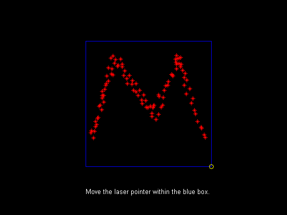
% Close the laser figure. close(laserFig); % Stop the acquisition, remove the object from memory, % and clear the variable. stop(vid) delete(vid) clear vid % Remove the directory containing the utility functions from the MATLAB path. rmpath(utilpath);